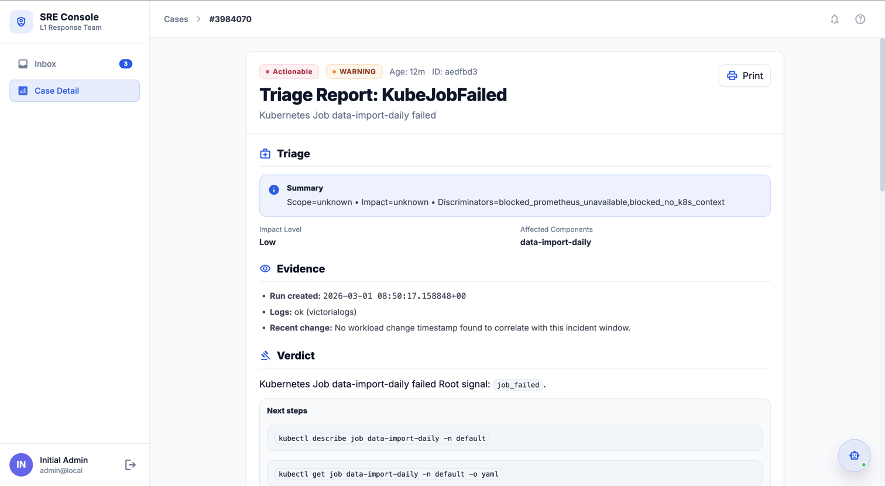
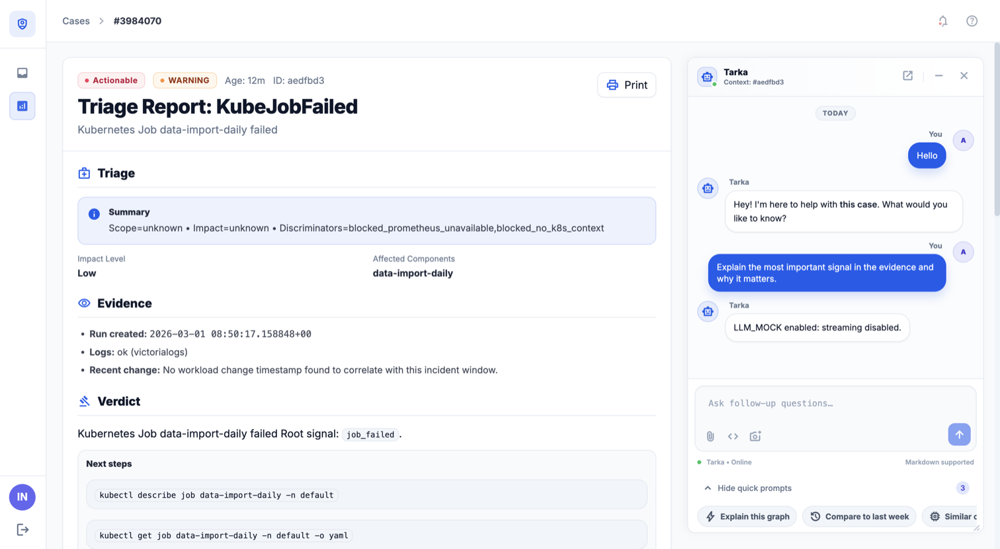

See It in Action
A triage console built for on-call engineers.

Case Inbox — all firing alerts in one place, scored by impact and confidence. Actionable status: FIRE / INVESTIGATE / MONITOR.

Triage Report — structured verdict for KubeJobFailed. Scope, discriminator, evidence bullets, and copy-paste kubectl commands ready to run.

Case Chat — ask follow-up questions with full investigation context. The agent can run PromQL, check K8s state, or search logs in real time.

Global Chat — query across all open cases simultaneously. Ask "how many CPU throttling alerts are firing?" and get a structured, tool-backed answer.